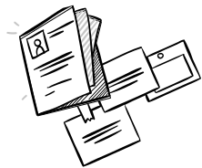

Card Personalization Tool
Personalized cards that matter.
Card Personalization Tool that helps users to express themselves in emotional messages and allows them to design 3D pop-up cards.
@Brandon Grimm for Research & UX Design
@Me for Research, UX & UI Design
November 2019 – January 2020
Step 1 • November 2019
Empathizing with people
As part of “Project Bespoke”, each design team member was assigned one user as a base of our research. Our research consisted of several interviews and informal meetings with our users, which provided us with a bunch of interesting gift-giving & receiving insights. To get a deeper sense of what's important for the user during gift-giving & receiving we asked our users to describe to us or if possible to bring and show the most important gift or card they have ever received.
Step 2 • December 2019
Defining the problem
After gathering and analyzing all the interesting stories about the experiences from giving or receiving gifts we needed to an overview and highlight the most alarming problems that users are facing. Then we eventually came up with "How Might We" questions that would allowed us to transit straight to the ideation phase.
Users struggle to express themselves in emotional messages
Current tool limits users in fully customizing the card
How might we support the user in delivering strong emotional message?
How might we create a tool that is engaging and has all necesarry features to fully customize cards?
Step 3 • November 2019
Coming up with ideas & concept
To come up with a lot of ideas to converge from we sketched 60 ideas in total as a design team (30 per person). To converge from that amount of ideas we discussed each one of the ideas and how they address the problems of our users as well as how they how they contribute to the overall experience in terms of UX factors.
Step 1 • November 2019
Prototyping & testing
Before diving into high-fidelity prototyping we drafted our vision of the interface on paper. Paper prototype consisted of several screens that the user could go through to get a grasp of what will the tool be capable of and be able to provide us with some kind of feedback. Followingly we tested a few respondents and gathered insights about some usability problems that we have not tought about beforehand.
From that point we moved onto digital protyping a started building the inital components and building blocks of the UI. In our digital design process we really strived for the engaging & activating design that complies with the visual & aesthetics preferences of our users as well as to provide Hallmark with consistent design that fits to their visual language.